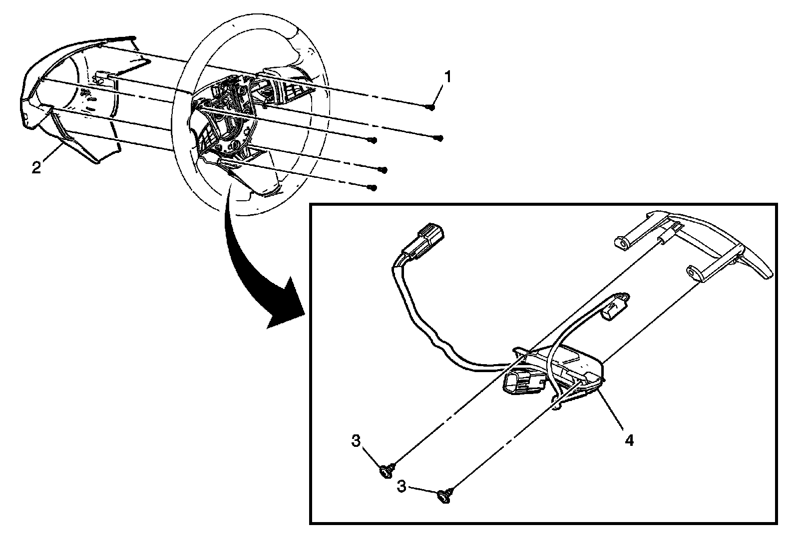
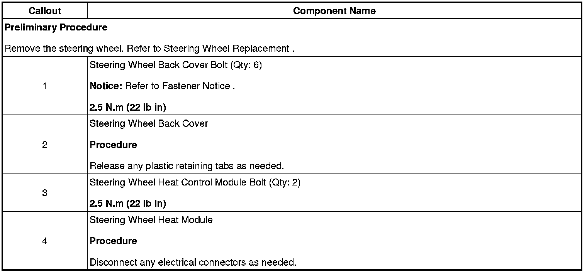

Operation CHARM
: Car repair manuals for everyone.
Home
>>
Cadillac
>>
2008
>>
SRX AWD V8-4.6L
>>
Repair and Diagnosis
>>
Relays and Modules
>>
Relays and Modules - Steering and Suspension
>>
Relays and Modules - Steering
>>
Steering Wheel Heater Control Module
>>
Service and Repair
Steering Wheel Heater Control Module: Service and Repair
Steering Wheel Heat Module Replacement

